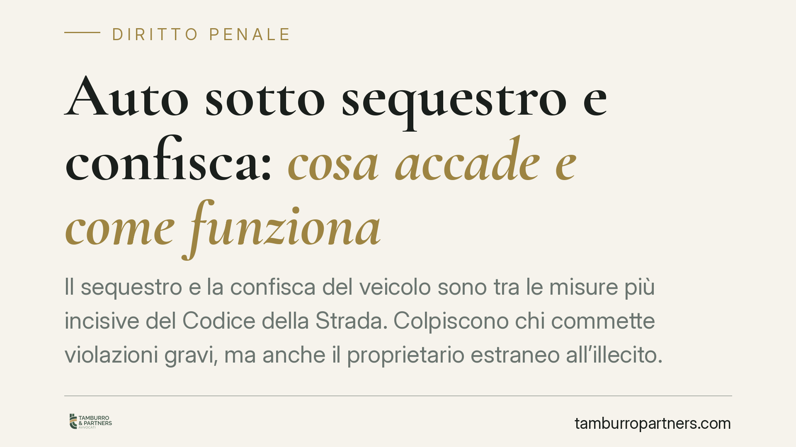

Auto sotto sequestro e confisca: cosa accade e come funziona
Il sequestro e la confisca del veicolo sono tra le misure più incisive del Codice della Strada. Colpiscono chi commette violazioni gravi, ma anche il proprietario estraneo all'illecito. Capire la differenza tra le due misure, i termini per reagire e i propri diritti è decisivo: da questo dipende la possibilità di riavere il mezzo o di perderlo definitivamente.

Sequestro e confisca: due misure diverse
È essenziale distinguere due istituti che il linguaggio comune tende a confondere.
Il sequestro è una misura *cautelare* e provvisoria: il veicolo viene sottratto alla disponibilità del proprietario in attesa della definizione del procedimento. È reversibile. Se la violazione non viene accertata o se il presupposto viene meno, il mezzo torna al legittimo titolare.
La confisca è invece la misura *definitiva* e ablativa: il veicolo esce dal patrimonio del proprietario e passa allo Stato, con affidamento all'Agenzia del Demanio. È l'esito che occorre scongiurare.
Inquadramento normativo
La disciplina generale è dettata dall'art. 213 del Codice della Strada, come modificato dal D.L. 113/2018, convertito con L. 132/2018. La norma regola le modalità di sequestro, l'affidamento in custodia e i presupposti che possono condurre alla confisca amministrativa del veicolo.
Le fattispecie sono varie. Tra le più ricorrenti: la circolazione senza copertura assicurativa (art. 193 CdS), per la quale il sequestro è finalizzato al dissequestro previa regolarizzazione della polizza; alcune ipotesi di guida senza patente, oggi in larga parte trasformata in illecito amministrativo dall'art. 116, comma 15, CdS (che prevede sanzione pecuniaria e, nei casi di reiterazione nel biennio, il fermo amministrativo del veicolo); nonché le violazioni gravi in materia di velocità e circolazione con veicoli sottoposti a fermo.
Sul versante costituzionale, la giurisprudenza della Corte Costituzionale ha ribadito il principio di proporzionalità delle misure ablative: la confisca non può risolversi in un automatismo sganciato dalla gravità concreta della condotta e dal rapporto tra il valore del bene e l'entità della violazione. È un principio che offre spazi di difesa non trascurabili.
Cosa cambia per il proprietario
Nella pratica, il proprietario colpito da sequestro si trova davanti a scelte con termini stringenti. Il veicolo viene affidato in custodia; le spese di custodia gravano, di regola, sul titolare e crescono con il passare del tempo. Ignorare il provvedimento peggiora la posizione economica e processuale.
Particolare attenzione merita la posizione del terzo estraneo. Quando il veicolo è di proprietà di un soggetto diverso da chi ha commesso la violazione, la confisca non è automatica. Il proprietario può opporsi dimostrando la propria buona fede, ossia di essere estraneo all'illecito e di non aver potuto prevederlo o impedirlo. L'onere della prova grava però sul terzo, che deve fornire elementi concreti: la mera intestazione del veicolo non basta.
I termini per reagire
Contro il verbale e le misure adottate sono percorribili due strade alternative, con termini diversi e da non confondere:
- Ricorso al Prefetto: entro 60 giorni dalla contestazione o notificazione (art. 203 CdS).
- Ricorso al Giudice di Pace: entro 30 giorni (60 giorni se il ricorrente risiede all'estero), ai sensi dell'art. 204-bis CdS.
Le due vie non sono cumulabili: la proposizione del ricorso al Prefetto preclude quello al Giudice di Pace per la medesima violazione. La scelta dello strumento va ponderata in base alla natura della contestazione.
Cosa fare in concreto
- Verifica il verbale: controlla la fattispecie contestata, la data di notifica e l'esattezza dei dati. Da qui decorrono i termini.
- Regolarizza la posizione assicurativa se il sequestro dipende dalla mancata copertura (art. 193 CdS): la regolarizzazione consente il dissequestro del veicolo.
- Rispetta i termini: 30 giorni per il Giudice di Pace, 60 giorni per il Prefetto. Le due strade sono alternative, non sommabili.
- Documenta la buona fede se sei proprietario estraneo all'illecito: raccogli prove concrete della tua estraneità, perché l'onere probatorio è a tuo carico.
- Valuta lo strumento corretto: è opportuno valutare con un legale la via di ricorso più adeguata e i relativi termini, tenuto conto del principio di proporzionalità affermato dalla Corte Costituzionale.
Agire con tempestività è la variabile decisiva: molti diritti si perdono non nel merito, ma per il decorso dei termini.
---
Contributo informativo a cura di Tamburro & Partners Avvocati - Avv. Giuseppe Tamburro. Non costituisce parere legale.
Ogni condominio ha una storia a sé.
Se gestisci un'amministrazione e vuoi un confronto su una specifica questione condominiale, scrivi allo studio. Ti rispondiamo entro un giorno lavorativo.